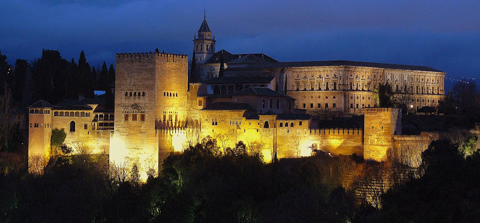

PRIMER CONGRESO DE CEIIE
La Alhambra de Granada
La Alhambra es hoy, fiel a su historia, la meta de muchos viajeros, quizá el mejor tesoro que guarda la ciudad de Granada. Disfrutar de su belleza recorriendo las estancias palatinas, profundizando en los aromas surgidos de sus patios y jardines, deleitarse en los lugares de luz y color que ofrecen sus ornamentados salones y recrear la mirada con sus impresionantes vistas del Albaicín y la Vega, constituyen todo un privilegio para los sentidos.
Lugar de encuentro cultural y destino elegido por millones de personas de todo el mundo obligan a repensar su valor de existencia en un mundo globalizado y sometido a múltiples tensiones. Entre todos debemos hacer un esfuerzo por preservar este extraordinario legado fomentando actitudes de respeto y convivencia.
La oferta cultural del Conjunto Monumental de la Alhambra y el Generalife es amplia y variada.
Como asistentes a este Congreso, desde la organización queremos ofrecerles la visita de
"La Alhambra Exclusiva", una visita pensada para diferentes colectivos a los que se pretende
obsequiar con una aproximación más íntima y privada a la Alhambra.
Como caracteres más reseñables de esta visita se pueden incluir:
- Conocer la Alhambra de una forma especial en un horario exclusivo.
- Escuchar sus silencios.
- Disfrutar de la puesta del sol desde sus incomparables miradores.
- Vivir sus espacios más representativos con una iluminación especial.
- Sentirse protagonista de la Historia en un marco excepcional y único.
- Descubrir la Alhambra a través del sonido y la luz.
SERVICIOS GENERALES EN EL MONUMENTO
Puntos táctiles
Existen una serie de "Puntos táctiles" en el itinerario de visita pública para que personas con discapacidad visual y también el resto de los visitantes puedan percibir con el tacto las características y los detalles de los elementos que decoran el Conjunto Monumental.
Máquinas expendedoras de comida y bebida
El Patronato de la Alhambra y Generalife ha habilitado una serie de máquinas que se pueden encontrar en varias zonas del Conjunto Monumental para posibilitar al visitante la adquisición de comida y bebida, mientras se ponen a disposición del visitante los servicios de cafetería y restauración.
Puede encontrar máquinas en las siguientes áreas:
- Aparcamiento de la Alhambra.
- Pabellón de Acceso.
- Pabellón de Servicios junto a la Puerta del Vino.
Tienda
La Tienda de la Alhambra la puede encontrar en el Conjunto Monumental: en el Pabellón de Acceso y Palacio de Carlos V. En ella se pueden adquirir diferentes monografías, la Guía Oficial de la Alhambra, además de libros, documentos y publicaciones ligados al Monumento y a su entorno, así como una gran variedad de artículos de recuerdo.
También puede encontrar “La Tienda de la Alhambra” en el centro de Granada, en la calle Reyes Católicos número 40. En esta tienda, además es posible la adquisición y recogida de entradas al Monumento mediante tarjeta de crédito. Facilita a los interesados planos oficiales y folletos de los distintos programas y actividades que tienen lugar en el Monumento.
Aparcamiento
El Patronato de la Alhambra y Generalife dispone de un aparcamiento público para facilitar el acceso rodado al Recinto Monumental. Se extiende desde la rotonda de entrada al cementerio hasta el Pabellón de Acceso, donde se encuentran situadas las taquillas. Está distribuido en varias zonas según el tipo de vehículos: un aparcamiento para autobuses y caravanas (el primero que se puede encontrar) además de tres áreas más para automóviles particulares. El aparcamiento está abierto y vigilado las 24 horas del día.
Audioguía
El Patronato de la Alhambra y Generalife pone a disposición de los visitantes un servicio de audio-guía para facilitar la visita y comprensión del legado cultural que custodia. Dichas audio-guías proporcionan al visitante las explicaciones de los diferentes lugares y aspectos del itinerario de visita pública en varios idiomas. Este servicio se puede contratar en el Pabellón de Acceso, junto a las taquillas y en el interior del Palacio de Carlos V. Idiomas (español, inglés, francés, italiano y alemán).
Consigna
El Patronato de la Alhambra y Generalife ha habilitado dos consignas para que los visitantes puedan depositar maletas, bolsos y carritos de bebé. Se encuentran ubicadas en:
- Pabellón de acceso junto a las taquillas.
- Pabellón de servicios de la Puerta del Vino.
"La Alhambra es el enclave principal de una estructura territorial compleja, que revela su importancia por el dominio sobre la ciudad de Granada".